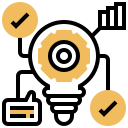
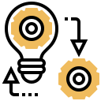
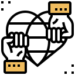
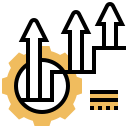

인사제도
인재상
85년의 기업 역사 속에서 우리는 '법고창신(法古創新 : 옛 것을 배우고 익혀 새로운 것으로 거듭나게 함)'의 의미를 되새기고 있습니다. '창의','협동','봉사'의 사시(社是)를 바탕으로 '동아인이라면 어떻게 살아야 하는가?' 라는 질문에 우리는 스스로 아래와 같이 대답하고자 합니다.
자신이 맡은 일에서 현실에 안주하지 않고 새로운 시각으로 문제해결을 위해 도전하며, 변화하지 않는 환경을 탓하고 아쉬워하기 보다는 내가 먼저 변함으로써 주변을 변화시킬 수 있는 인재. 혼자가 아닌 우리가 할 수 있는 가치의 소중함을 알고, 이를 위해 기꺼이 신뢰를 주고 받으며 열린 마음으로 소통할 수 있는 인재. 마지막으로, 기업의 가치가 '이윤 추구'에만 있는 것이 아니라 사회의 일원으로서 그 책임을 다할 때 의미가 있는 것임을 알고 함께 그 가치를 일구어 나갈 수 있는 인재.
우리는 이러한 인재를 'D-STYLE' 인재라고 부르고 싶습니다.
:D STYLE TALENT
-

- 혁신 추구
- 01 혁신의 생활화
- 02 새로운 시각
- 03 도전 정신
- 04 성실함과 끈기
-

- 변화 주도
- 05 민첩한 대응
- 06 지속적인 변화 노력
- 07 열린 마음
- 08 솔선수범
-

- 상호 신뢰
- 09 시너지 창출
- 10 Win-Win
- 11 적극적인 소통
- 12 일관된 행동
-

- 함께 성장
- 13 사회적 책임
- 14 나눔과 봉사
- 15 자기 계발
- 16 책임 의식
인재육성
동아의 미래는 '사람'입니다.동아쏘시오그룹의 미래는 바로 지금 여러분들에게 있습니다.
우리의 미래는 끊임없이 자신을 갈고 닦는 동아인으로 만들어집니다.
개인과 조직의 차별적 경쟁력 확보를 위해 교육을 통한 성장을 이끌고 있습니다.
- 1. 계층별 리더십 및 그룹사 비전전파 교육
- 동아쏘시오그룹은 “인류의 건강과 행복을 위한 끝없는 도전”이라는 미션을 이룰 리더를 육성하고자 합니다. 그룹의 미션과 비전, 교육철학을 바탕으로 매년 관리자, 시니어, 주니어로 구분하여 계층별 필수역량을 함양하기 위해 최선을 다하고 있습니다. 계층별 교육과 연계하여 직업기초능력 강화를 위한 디딤돌 과정을 운영하고 있습니다. 또한, 그룹사의 비전과 미션공유 및 시너지 창출을 위해 전사적인 비전내재화 교육을 실시하고 있습니다. (신입사원 교육 / 비전내재화 교육 / 멘토링 / 입사 1년차 교육 / 중간 관리자 교육 / 팀장교육 / 임원교육 / 디딤돌)
- 2. 직무전문역량 강화 교육
- 동아쏘시오그룹은 성장동력 중심의 직무공통교육과 직무전문교육을 시행하고 있습니다. 영업, 마케팅, 생산, 글로벌, IT 영역으로 그룹사 차원의 직무공통교육을 실시하고 있으며, 헬스케어 전문가 양성을 위해 고도의 직무 전문교육도 실행하고 있습니다. 또한, 상시 주도학습을 위해 온라인학습플랫폼을 구축하여 체계적인 직무전문가 양성을 위해 노력하고 있습니다. (직무공통 아카데미 / MR TRAINING / R&D 특수교육 / GMP SCHOOL / 온라인학습 / 사외교육 지원 / PV –TRAINING)
- 3. 글로벌역량 강화 교육
- ‘Global Heathcare Player’ 도약을 위해 글로벌역량 교육을 실시하고 있습니다. 전임직원 대상으로 외국어역량강화를 위한 사내어학프로그램과 글로벌 우수인재 양성을 위해 사외어학교육도 지원하고 있습니다. 상시적으로 외국어학습을 할 수 있도록 온라인어학교육과 전화외국어교육도 운영하고 있습니다. 뿐만 아니라, 해외업무 적응을 위한 이문화 이해 과정과 해외비지니스를 위한 다양한 교육기회를 제공하고 있습니다. (온ㆍ오프라인 사내어학교육 / 전화 외국어교육 / 외부 어학기관 지원 / 이문화 이해 과정 / BD 실무과정 등)
- 4. 행복한 일터를 위한 교육
- “직원이 행복한 회사를 만들자” 동아쏘시오그룹이 추구하는 가장 큰 가치입니다. 임직원의 니즈를 반영한 원데이 클래스, 임직원 자녀대상으로 하는 피닉스캠프(연 2회), 점심시간을 활용한 음악공연 등 우리의 일터를 행복하게 만드는 다양한 프로그램을 하고 있습니다. 또한, 책을 통한 소통과 임직원의 자아실현을 위해 사내 도서관과 독후감 릴레이, 독서통신 교육을 실시하고 있습니다. (D-Class(임직원 대상 원데이 클래스) / D-Together(임직원 가족과 함께하는 교육) / D-Fun(음악공연) / 임직원 도서관 [꿈꾸는 책마당] 운영 / 독후감 릴레이 [책바퀴] 운영 / 독서통신 등)